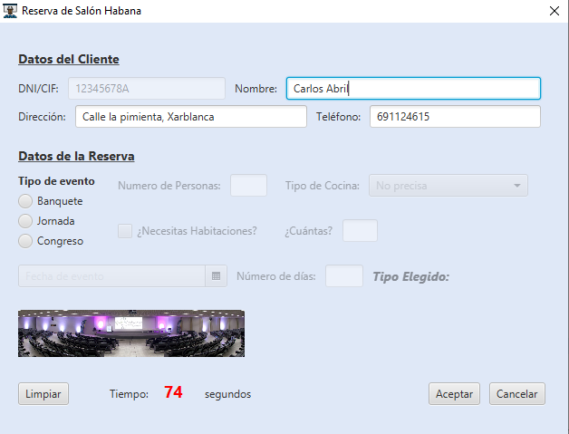
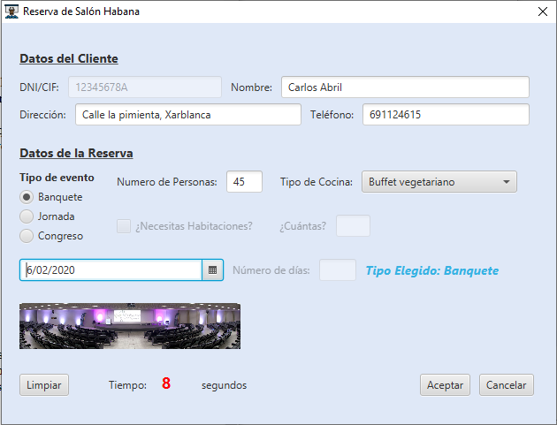
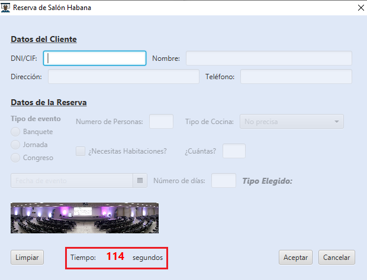

Salón Habana
Está página de documentación corresponde con la opción del menu Salón habana. Donde podremos realizar una reserva.
Datos del Cliente
La sección de datos del cliente consta de 4 campos rellenables:
- DNI
- Nombre
- Dirección
- Teléfono
En este apartado debemos introducir un DNI (8 números y 1 carácter de la A-Z) para poder habilitar los campos una vez rellenado el campo debemos pulsar la tecla ENTER para capturar el campo y seguir con la reserva, en cuyo caso hayamos realizado anteriormente una reserva se rellenarán nuestros campos automáticamente.
Una vez introducido el DNI debemos introducir un nombre válido, una dirección válida y un teléfono que empiece por 6-7-9, en el caso que el nombre o el teléfono no se ha introducido correctamente saltara una alerta de que el campo no se ha introducido correctamente por lo cual deberá introducir un nombre correcto o teléfono.

Datos de la reserva
La sección de datos de reserva consta:
- Tipo de evento
- Número de personas del banquete, tipo de cocina
- Habitaciones,¿Cuántas?
- Fecha de evento
- Número de dias de reserva
Debemos seleccionar un tipo de evento, si seleccionamos Banquete se nos habilitará el número de personas, una vez insertado el número de personas (como máximo 100) se nos habilitará el tipo de cocina. Si seleccionamos Jornada no necesitaremos rellenar ningún campo adicional solo el número de personas (como máximo 100) y la fecha de evento. Si seleccionamos Congreso si necesitas habitaciones debe indicar cuantas y el número de días de instancia.
La fecha de evento solo podrá ser de la fecha actual en adelante.

Funcionalidad de los botones
Limpiar: Pone todos los campos vacíos, independientemente si a rellenado un campo.
Aceptar: Para guardar la reserva en la base de datos, si no ha rellenado un campo correctamente se le indicará con mensaje de alerta correspondiente.
Cancelar: Cancelará la reserva que estamos haciendo, nos saldrá una ventana de si estamos seguro de cancelar la reserva y volverá a la ventana principal.
Temporizador
En la parte de abajo tenemos un temporizador que nos indica el tiempo de duración de la reserva si sobrepasamos el tiempo límite de 120 segundos se nos mostrará un mensaje de que ha caducado la sesión en la que debemos cerrar la ventana y volverla a abrir para realizar una reserva (una vez caducada la sesión los datos no se conservarán).

Código de la aplicación
Github.com
Documentación oracle